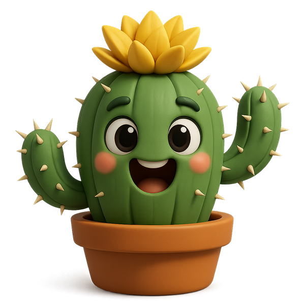
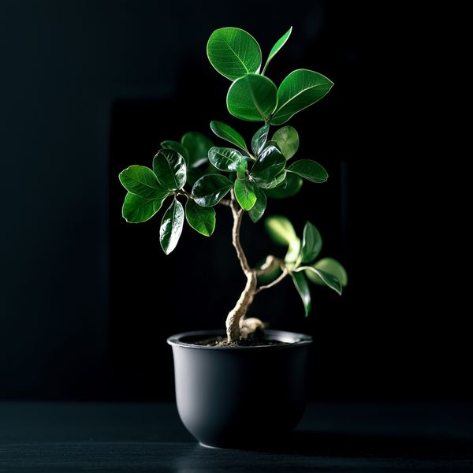
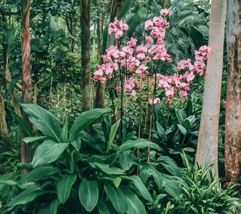
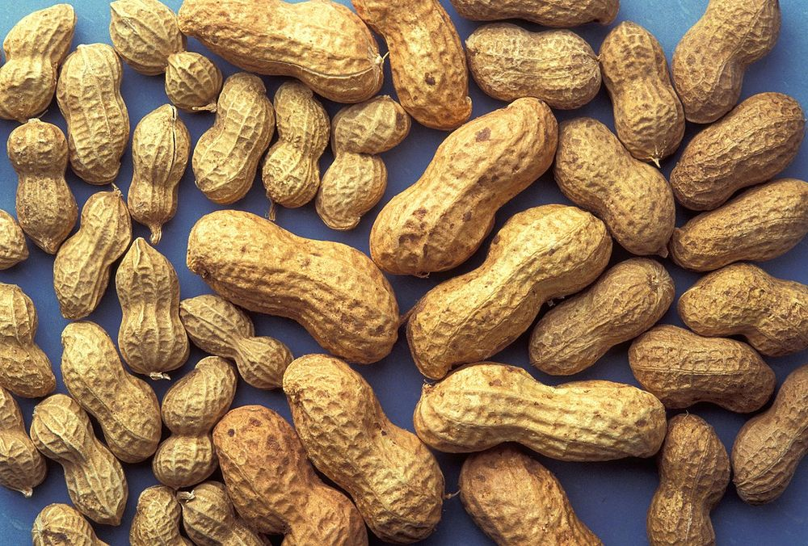
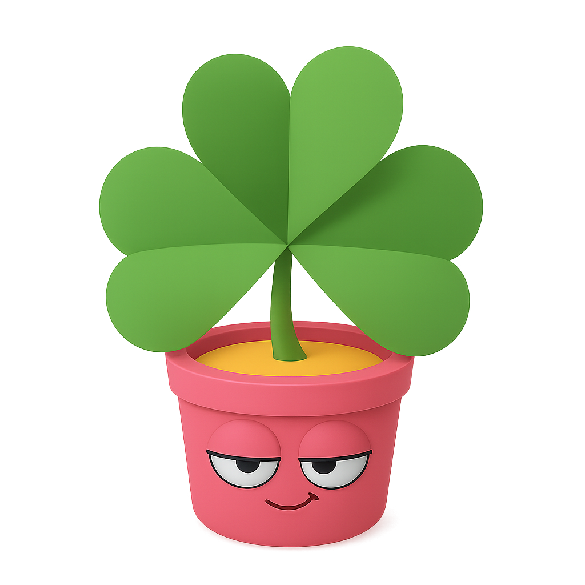

Try for Free
- Unlimited chats with Dr Pot
- Diagnosis from a photo
- Treatment plans & check-ins
- Full care guide for every plant
Plant ID and toxicity checks are always free.
7 days free, then $39.99/year
Cancel anytime on the App Store
Pot
Identify & Grow Plants
Care Tips & Home Collection
Get started
By continuing to use Pot,
you agree to the and
Check your email
We have sent password reset instructions to your email
My Garden
Add your first plant
Tap the camera below — every plant you keep lives here with its care plan.
Scan your first plant
Tap the camera below — every plant you scan is saved here, so you can come back to it.
My Garden

One plant at a time,
keep in center
Too close
Too far

Too many plants
Please make sure your plant is the only object in the frame 🪴
Recognizing

Peanut
Arachis hypogaea
Quick facts
Characteristics
Care Profile
How-tos
Basic Info
FAQ
Common Problems
Diseases
Caused by fungi, bacteria, or viruses
Pests
Caused by insects or parasites
Amazing stories
Settings
Account
Appearance
Legal
About App
Prototype
Name
User name is how people find your profile. Usernames can only contain letters and numbers.
User email

POT
Version 1.0.0
Love your plants but sometimes forget to care for them?
POT is your smart plant companion — designed to make plant care simple, joyful, and stress-free. Just add a plant (or scan it!), and POT will guide you through everything: when to water, how much sunlight it needs, and what to do if it’s not looking its best.
We built POT to be more than just a reminder app — it’s like having a mini botanist in your pocket. It sends you friendly reminders, tracks your plant’s health, and even helps diagnose common issues based on what you see.
Our mission is to help people reconnect with nature in a modern, thoughtful way. We’re constantly improving the app’s interface and enhancing our plant recognition engine to make sure you get the best possible experience.
POT brings together a global community of plant lovers — from beginners to green-thumb pros.
Join us, and let your plants thrive while you enjoy the peace of mind.
Pot: Plant Identifier
Plant Care & Identification